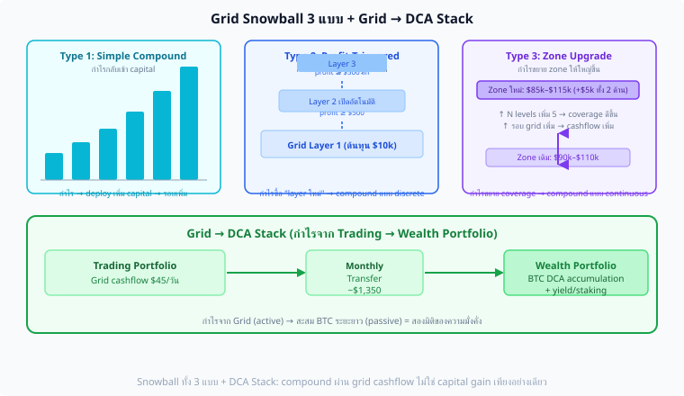

Grid Trading Mastery · Part 6B
Grid Snowball + DCA Stack
3 รูปแบบ Compound · Profit-Triggered Layer · Zone Upgrade
Grid → DCA Stack: Trading Portfolio ป้อน Wealth Portfolio
Long-Term BTC Accumulation ผ่าน Grid Cashflow
แก่นของ Part นี้
Grid ที่ดีทำกำไรทุกวัน แต่ถ้าแค่ "นำกำไรออก" — compound growth ไม่เกิด Grid Snowball นำ cashflow กลับเข้า grid เพื่อเพิ่ม Q หรือเปิด zone ใหม่ | Grid-DCA Stack ส่งส่วนหนึ่งของกำไรไปซื้อ BTC ระยะยาว (Wealth Portfolio) อย่างเป็นระบบ
Snowball: Q(t) = Q₀ × (1 + daily_return)^t · DCA Stack: 30% grid profit → weekly BTC buy
6B.1 Grid Snowball — 3 รูปแบบ
Type 1: Simple Compound
นำ profit ทั้งหมดกลับเข้า grid
เพิ่ม Q ทุก N cycles
Type 2: Profit-Triggered Layer
เปิด grid level ใหม่เมื่อ profit
สะสมถึง threshold
Type 3: Zone Upgrade
ขยาย zone หรือเพิ่ม N
เมื่อ capital เพิ่มพอ

Type 1: compound Q ราบเรียบ · Type 2: เพิ่มทีละชั้น (step function) · Type 3: zone upgrade ใหม่ทั้งหมด · DCA Stack: ส่วนหนึ่งไปซื้อ BTC ระยะยาว
6B.2 Type 1: Simple Compound
นำ realized profit กลับเข้า grid capital → Q เพิ่มขึ้น → cashflow ต่อรอบเพิ่มขึ้น → compound effect:
$$Q(t) = Q_0 \times \left(1 + r_\text{daily}\right)^t$$
def simple_compound_grid(initial_q, daily_profit_rate, days, rebalance_every=7):
"""
Type 1: Compound Q ทุก N วัน
daily_profit_rate = กำไรต่อวัน / grid capital
rebalance_every = ปรับ Q ทุกกี่วัน
"""
q = initial_q
capital = initial_q * 100000 # สมมติ price $100k
log = []
for day in range(1, days + 1):
# กำไรวันนี้
daily_profit = capital * daily_profit_rate
capital += daily_profit
# ปรับ Q ทุก rebalance_every วัน
if day % rebalance_every == 0:
new_q = capital / 100000
q = round(new_q, 4) # round เพื่อให้ practical
log.append({"day": day, "q": q, "capital": capital})
return log
# ตัวอย่าง: Q₀=0.01 BTC · rate=0.27%/วัน · 365 วัน
# Q(365) = 0.01 × (1.0027)^365 = 0.01 × 2.66 = 0.0266 BTC
# Capital: $1,000 → $2,660 (+166% ใน 1 ปี)
ข้อดี: เรียบง่าย ไม่ต้องตัดสินใจ
ข้อเสีย: ถ้ากำไรไม่ realized (inventory ค้าง) → Q ไม่เพิ่ม
6B.3 Type 2: Profit-Triggered Layer
รอให้ profit สะสมถึง threshold แล้วค่อยเปิด "grid level ใหม่" — ได้ compound แบบ discontinuous step:
def profit_triggered_layer(grid_bot, trigger_threshold=500):
"""
เปิด grid level ใหม่เมื่อ accumulated profit ≥ threshold
"""
accumulated_profit = 0
layers_added = 0
while True:
# รับ daily profit จาก grid
daily_profit = grid_bot.get_daily_realized_profit()
accumulated_profit += daily_profit
if accumulated_profit >= trigger_threshold:
# เปิด level ใหม่ (extend zone ลงอีก 1 step)
new_level_price = grid_bot.zone_low - grid_bot.step
grid_bot.add_level(price=new_level_price, qty=grid_bot.base_q)
grid_bot.zone_low = new_level_price
layers_added += 1
# Reset accumulation counter
accumulated_profit -= trigger_threshold
print(f"Layer {layers_added} added at ${new_level_price:,}")
# ตัวอย่าง:
# Grid capital $10,000, กำไร $100/วัน
# Trigger every $500 profit ≈ ทุก 5 วัน
# ใน 1 เดือน: เพิ่มประมาณ 6 layers ใหม่
เพิ่ม zone ลงต่ำกว่า หรือสูงกว่า:
กลยุทธ์ A: เพิ่ม lower zone → capture ถ้าราคาลงมา
กลยุทธ์ B: เพิ่ม upper zone → เตรียม TP ในชั้นสูงขึ้น
กลยุทธ์ C: สลับตาม Hurst (ถ้า H ต่ำ → ต่ำสุด, ถ้า H สูงขึ้น → บนสุด)
6B.4 Type 3: Zone Upgrade
เมื่อ grid capital สะสมถึง threshold ใหม่ — ปิด grid เดิม เปิด grid ใหม่ที่ใหญ่กว่า (zone กว้างขึ้น หรือ Q ใหญ่ขึ้น):
Zone Upgrade Criteria:
def check_zone_upgrade(current_capital, initial_capital, upgrade_threshold=0.50):
"""
Upgrade เมื่อ capital เพิ่มขึ้น 50% จากตอนเริ่ม
"""
growth = (current_capital - initial_capital) / initial_capital
return growth >= upgrade_threshold
Zone Upgrade Process:
Initial: Capital $10,000 · Q=0.001 BTC · Zone $90k–$110k
After 3 months: Capital $15,000 (+50%)
Upgrade Options:
A) เพิ่ม Q: ใช้ $15,000 กับ zone เดิม → Q = 0.0015 BTC (+50%)
B) ขยาย Zone: ใช้ $15,000 กับ zone ใหม่ $80k–$120k (+33% wider)
C) เพิ่ม N: zone เดิม แต่ step เล็กลง (fill บ่อยขึ้น)
ตัวอย่าง:
$10,000 · Zone $90k–$110k · Step $2k · N=10 · Q=0.001 BTC
↓ 3 months profit $5,000
$15,000 · Zone $87k–$113k · Step $2k · N=13 · Q=0.00115 BTC (ปรับตาม capital)
Note: Zone Upgrade ต้องผ่าน validation checklist (Part 3) ก่อน
6B.5 Snowball Comparison
| Type | กลไก | Complexity | Growth Rate | Risk |
|---|
| Type 1 (Simple Compound) | Q เพิ่มทุก N วัน | ต่ำ | Smooth exponential | ต่ำ |
| Type 2 (Triggered Layer) | เปิด level ใหม่เมื่อ profit ถึง threshold | กลาง | Step function | กลาง (zone ขยาย) |
| Type 3 (Zone Upgrade) | เปิด grid ใหม่ทั้งหมดเมื่อ capital ถึง tier | สูง | Accelerated jump | สูง (ต้อง rebalance ทั้งหมด) |
แนะนำ: ใช้ Type 1 ก่อน จน capital ≥ 2× initial → Type 3 Upgrade
ผู้เริ่มต้น: Type 1 — ง่าย ไม่ต้องตัดสินใจ ให้ compound ทำงานเอง
ผู้มีประสบการณ์: Type 2 — เพิ่ม level ตามโอกาส ใช้ Hurst เลือกทิศทาง
ผู้ advanced: Type 3 + ใช้ Donchian ใหม่ re-optimize zone ทุก upgrade cycle
6B.6 Grid-DCA Stack — สองพอร์ตโฟลิโอ
Grid Snowball ช่วยให้ Trading Portfolio โตขึ้น — แต่ DCA Stack เพิ่มมิติที่สอง: ส่งกำไรส่วนหนึ่งไป Wealth Portfolio (ซื้อ BTC ระยะยาว)
Trading Portfolio (Grid)
Grid ทำงานทุกวัน → Cashflow $X/วัน
70% reinvest back into grid (Snowball) | 30% → Transfer
Weekly Transfer Rule
ทุกวันจันทร์: นำ 30% ของ weekly profit ซื้อ BTC ราคาตลาด
ไม่ limit order, ไม่ wait for dip — ซื้อ market อาทิตย์ละครั้ง
Wealth Portfolio (Long-term BTC)
BTC สะสม ถือตลอด ไม่ขาย
เป้าหมาย: สะสม BTC ระยะ 5–10 ปี
DCA Stack Implementation:
class GridDCAStack:
def __init__(self, grid_bot, dca_pct=0.30, dca_interval_days=7):
self.grid = grid_bot
self.dca_pct = dca_pct # 30% ของ profit ไป DCA
self.interval = dca_interval_days # DCA ทุกกี่วัน
self.wealth_btc = 0.0 # BTC สะสมใน wealth portfolio
self.trading_capital = grid_bot.capital
def weekly_rebalance(self, current_btc_price):
"""
ทำทุกอาทิตย์:
1. วัด realized profit สัปดาห์นี้
2. แบ่ง 30% ไปซื้อ BTC → wealth portfolio
3. ส่วนที่เหลือ compound กลับใน grid
"""
weekly_profit = self.grid.get_weekly_realized_profit()
if weekly_profit <= 0:
return # ไม่มีกำไร ไม่ DCA
# DCA amount
dca_amount = weekly_profit * self.dca_pct
btc_bought = dca_amount / current_btc_price
self.wealth_btc += btc_bought
self.trading_capital += weekly_profit * (1 - self.dca_pct)
print(f"DCA: ซื้อ {btc_bought:.6f} BTC @ ${current_btc_price:,}")
print(f" Wealth BTC รวม: {self.wealth_btc:.4f} BTC")
print(f" Trading capital: ${self.trading_capital:,.0f}")
ตัวอย่าง 1 ปี:
Grid profit: $100/วัน × 365 = $36,500
DCA (30%): $36,500 × 30% = $10,950 → ซื้อ BTC ทุกอาทิตย์
Compound (70%): $36,500 × 70% = $25,550 → กลับเข้า grid
BTC ที่ซื้อ (avg $100k/BTC): $10,950 / $100k = 0.1095 BTC
+ grid capital เพิ่มจาก $20,000 → $45,550 (+127%)
6B.7 Long-term Projection — Grid Snowball + DCA Stack
| ปีที่ | Grid Capital | Daily Cashflow | BTC สะสม | Wealth Value (@ $150k/BTC) |
|---|
| เริ่มต้น | $20,000 | $54/วัน (0.27%) | 0 BTC | $0 |
| ปีที่ 1 | $38,500 | $104/วัน | 0.11 BTC | $16,500 |
| ปีที่ 2 | $74,100 | $200/วัน | 0.32 BTC | $48,000 |
| ปีที่ 3 | $142,700 | $385/วัน | 0.73 BTC | $109,500 |
| ปีที่ 5 | $528,000 | $1,426/วัน | 2.80 BTC | $420,000 |
หมายเหตุ: สมมติ BTC price คงที่ที่ $100k (ไม่รวม BTC appreciation), daily return คงที่ที่ 0.27%/วัน, DCA 30% ทุกสัปดาห์ Projection ใช้เพื่อ illustrate compound effect เท่านั้น — ผลจริงขึ้นอยู่กับ market regime
ความเสี่ยงของ Long-term Projection
- Grid ไม่ได้ทำกำไร 0.27%/วันตลอด — มีช่วง Grid OFF, DD Halt
- BTC price เปลี่ยน → grid capital มูลค่าเปลี่ยน + DCA buy price เปลี่ยน
- ค่าธรรมเนียมแพลตฟอร์มอาจเปลี่ยน
- Realistic target: 40–70% ของ projection (ให้ปรับ downside)
6B.8 Running Example — 6 เดือนแรก
🔁 Running Example: Grid Snowball Type 1 + DCA Stack
Setup: Grid capital $10,000 · Q=0.001 BTC · Daily profit $27 (0.27%) · DCA 30% ทุกสัปดาห์
Month 1 (เดือนแรก):
Weekly profit avg: $27 × 7 = $189
DCA each week: $189 × 30% = $56.7 → ซื้อ BTC @ $100k = 0.000567 BTC/week
Compound: $189 × 70% = $132.3 → กลับเข้า grid
End of Month: Grid capital = $10,000 + $132.3 × 4 = $10,529
Wealth BTC = 0.000567 × 4 = 0.00227 BTC
Month 3:
Grid capital ≈ $11,600 (compound + standby yield)
New Q = $11,600 / ($100k × N) ≈ 0.00116 BTC (+16%)
Daily cashflow ≈ $31.3 (+16% จากเดิม)
Wealth BTC ≈ 0.007 BTC
Month 6 (สิ้นสุด):
Grid capital ≈ $13,900
Daily cashflow ≈ $37.5
Wealth BTC สะสม ≈ 0.016 BTC (≈ $1,600 @ $100k)
สรุป 6 เดือน:
Trading capital growth: $10,000 → $13,900 (+39%)
Wealth BTC: 0.016 BTC ($1,600)
Total value: $13,900 + $1,600 = $15,500 (+55% รวม)
vs Buy-and-hold $10,000 BTC: ถ้า BTC flat = $10,000 (0%)
ข้อสังเกต: ใน 6 เดือน BTC flat
Grid: +55% (cashflow compound)
B&H: +0% (รอ price)
DCA: +0% (BTC ราคาเดิม)
6B.9 แบบฝึกหัด
แบบฝึกหัด Part 6B
ข้อ 1: Grid profit $150/วัน · DCA 25% ทุกสัปดาห์ · BTC = $95,000 — DCA BTC ต่อเดือนเท่าไหร่?
คำตอบ:
Weekly profit = $150 × 7 = $1,050
DCA per week = $1,050 × 25% = $262.50
BTC per week = $262.50 / $95,000 = 0.002763 BTC
BTC per month = 0.002763 × 4 = 0.01105 BTC/เดือน
Value = 0.01105 × $95,000 = $1,050/เดือน
ข้อ 2: ทำไม DCA ทุกอาทิตย์แบบ market order ดีกว่ารอ dip?
คำตอบ:
การรอ dip = market timing — research แสดงว่า market timing ส่วนใหญ่ underperform เทียบ systematic DCA
ปัญหาของการรอ dip:
- Dip อาจไม่มา → ราคาขึ้นต่อ → พลาดซื้อทั้งหมด
- เมื่อ dip มา → panic ไม่กล้าซื้อ (fear)
- Opportunity cost: cash ไม่ทำงานระหว่างรอ
Weekly market order: ได้ BTC ทุกสัปดาห์ไม่ว่าราคาจะเป็นอย่างไร → ลด timing risk → average cost เฉลี่ยกว่า
ข้อ 3: Grid capital เริ่ม $15,000 · Type 3 Upgrade เมื่อ capital ≥ 150% ของ initial — ต้องรอ profit เท่าไหร่? (daily return 0.27%)
คำตอบ:
Target capital = $15,000 × 150% = $22,500
Profit needed = $22,500 − $15,000 = $7,500
Days = ln(1.50) / ln(1.0027) = 0.4055 / 0.002696 ≈ 150 วัน (≈ 5 เดือน)
หรือคำนวณ approximate: $7,500 / ($15,000 × 0.27%/วัน) = $7,500 / $40.5 ≈ 185 วัน
Note: compound effect ทำให้ 150 วันถูกกว่า simple linear estimate (185 วัน)
ข้อ 4: Type 2 vs Type 3 Snowball — เลือก Type ไหนถ้า BTC ลงมา 20% จากตอนตั้ง grid?
คำตอบ:
BTC ลง 20% = inventory มีมูลค่าลด + zone อาจใกล้ lower boundary
Type 2 (Triggered Layer) เหมาะกว่า:
- เพิ่ม level ที่ lower zone → capture ราคาถูก
- ไม่ต้องปิดหรือ reset grid ทั้งหมด
- ถ้า BTC ฟื้นกลับ → level ใหม่ที่ล่างกว่าจะ TP กำไรมาก
Type 3 (Zone Upgrade) ไม่เหมาะ:
- ปิด grid เดิม = ต้องขาย inventory ที่ขาดทุน unrealized
- เปิด zone ใหม่ที่ต่ำกว่า = ลง deeper risk
- ถ้า capital ลดลงจาก price drop → ไม่ถึง upgrade threshold